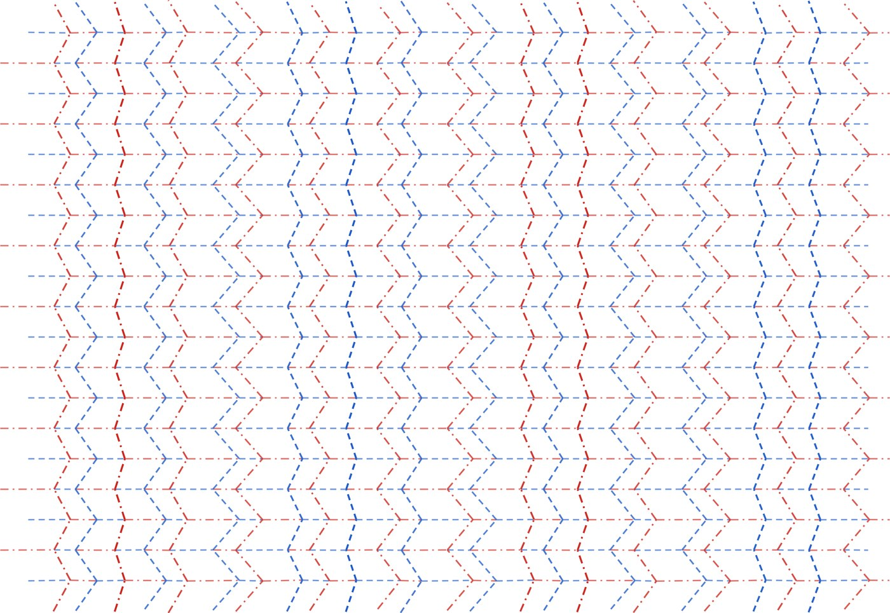
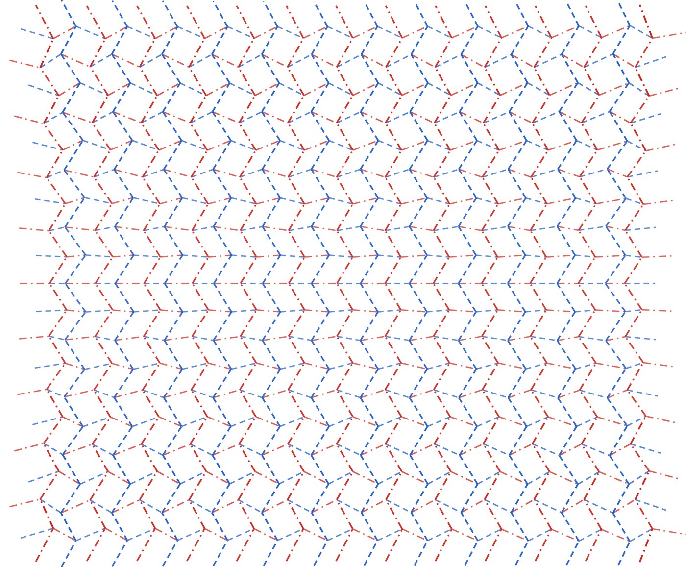
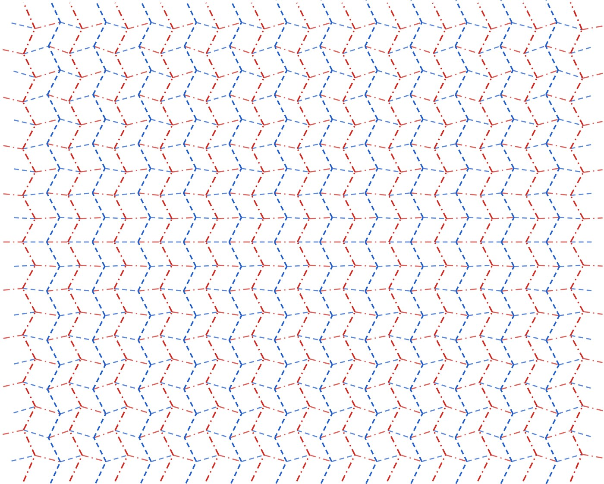
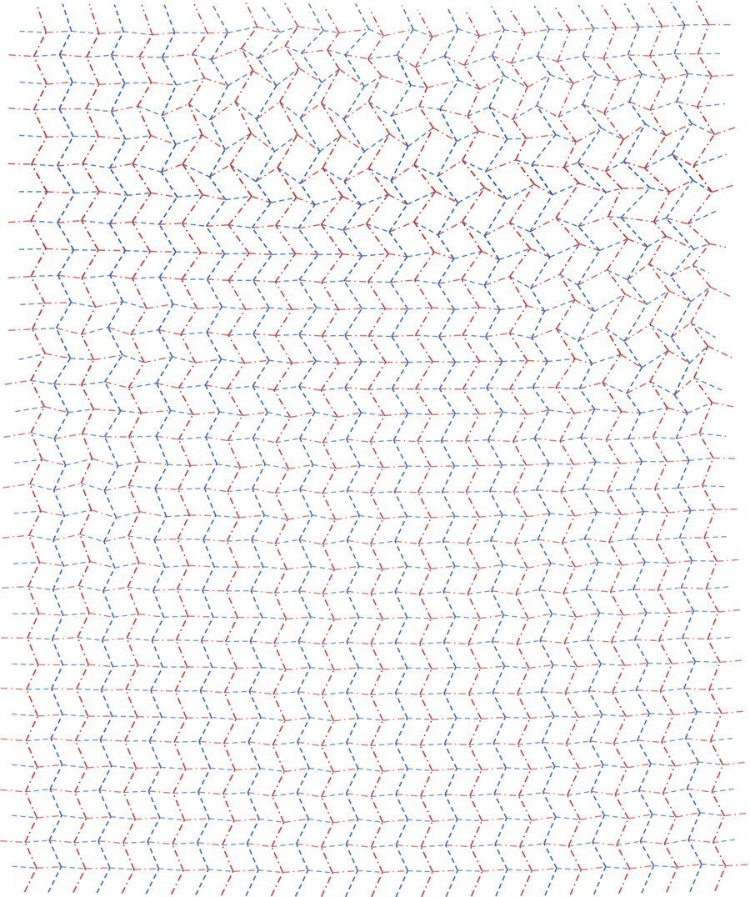

PAPER THAT REMEMBERS
Day 42 — four flat sheets, one crease pattern each, and the shapes they were told to become.
A flat sheet of paper cannot be a dome. Gauss proved it: bending does not change the curvature that lives inside the surface, and a plane has none. But a sheet folded into a Miura-ori corrugation is not quite a plane any more. Each cell can open or close a little, and if the cells are all slightly different, the corrugation as a whole can carry curvature it was never allowed to have. The four sheets above are that trick, computed. Every crease is straight; every vertex has exactly 360° of paper around it, so the pattern really is flat; every quad is planar. And the surface they were told to become is written into the small differences between neighbouring cells.
The wave is the easy one (no Gaussian curvature). The dome is positive curvature, so the cells shrink toward the top and bottom edges to make room. The saddle is negative, and the cells widen toward the corners. The fourth sheet is Penlod, the country this studio made by simulating rain on day 38: its relief, exaggerated three times, with the map printed on the flat sheet pre-distorted so that it only reads correctly once the paper has folded.
THE FILM
Each sheet is a physics simulation, not an animation: a bar-and-hinge model of the paper (stretch springs along every edge, rotational springs on the creases driven toward their design angles, stiffer springs across each facet so the paper can bend a little if it has to) relaxed to equilibrium at eighty fold states in a row. The sound is the same simulation: the creases' angular speeds gate the rustle, and the clicks are creases passing 45°.
PRINT AND FOLD THEM
Red dash-dot lines are mountains, blue dashes are valleys, and the line weight tells you how far each crease folds. Print at 100%. Score every line with something blunt, pre-crease gently, then collapse the whole sheet at once. Nobody has folded these by hand yet; the physics says they fold, and says how much the paper has to flex on the way (the last column below). If you fold one, send a photo.

WAVEA4 landscape · 20 × 26 cells
DOMEA4 landscape · 20 × 26 cells
SADDLEA4 landscape · 20 × 26 cells
PENLODA3 portrait · 34 × 30 cellsTHE NUMBERS
| sheet | cells | flat sheet | fit to target (rms / max) | pattern closes to | physics reaches design | paper had to flex |
|---|
Fit is how far the designed corrugation sits from the surface it was asked to become. Closes to is the residual when the 3D design is laid flat: how far from a true flat sheet the pattern is. Physics reaches design is the distance between the simulated fold and the design at the end. Flex is the largest bend across any facet during the folding motion, which is what a rigid paper cannot do, so it is the honest measure of how foldable each pattern is: all under 2°.
HOW
Design: a generalised Miura-ori (Tachi 2010; Dudte, Vouga, Tachi & Mahadevan 2016) as a quad grid whose
vertices move freely in 3D, minimised with L-BFGS under penalties for developability (angle sums of 2π
at every interior vertex), planarity of every quad, and distance to the target surface offset by half a
corrugation. The initial state is a true rigid Miura built by walking facets from a flat pattern, which
is also how I learned, the hard way, that the straight creases of a Miura alternate mountain and valley
at every vertex while the zigzags are constant ridges (I had it backwards for an hour; the closure
solver would not close). The flat pattern is a least-squares layout on all edge and diagonal lengths.
Folding: Liu & Paulino's bar-and-hinge model in PyTorch. Code:
the studio repo, folder day42
(design.py, rigid.py, fold.py, cp.py).